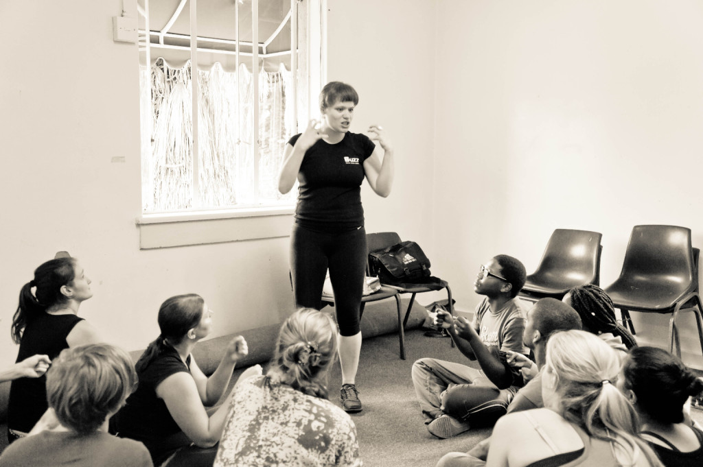
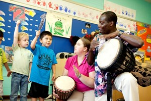
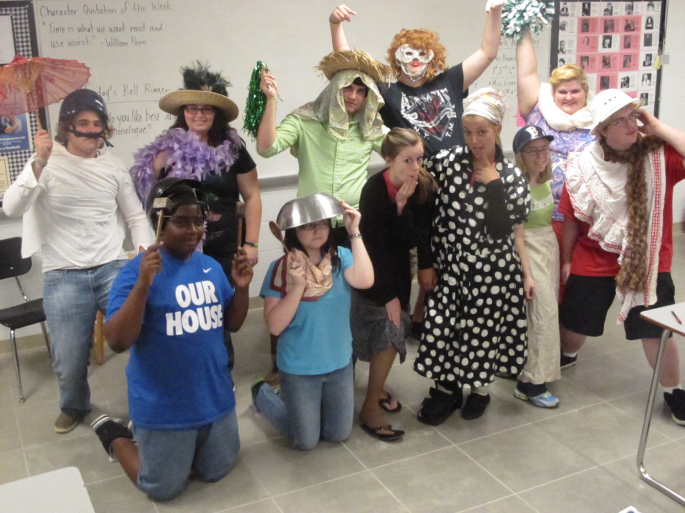
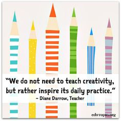
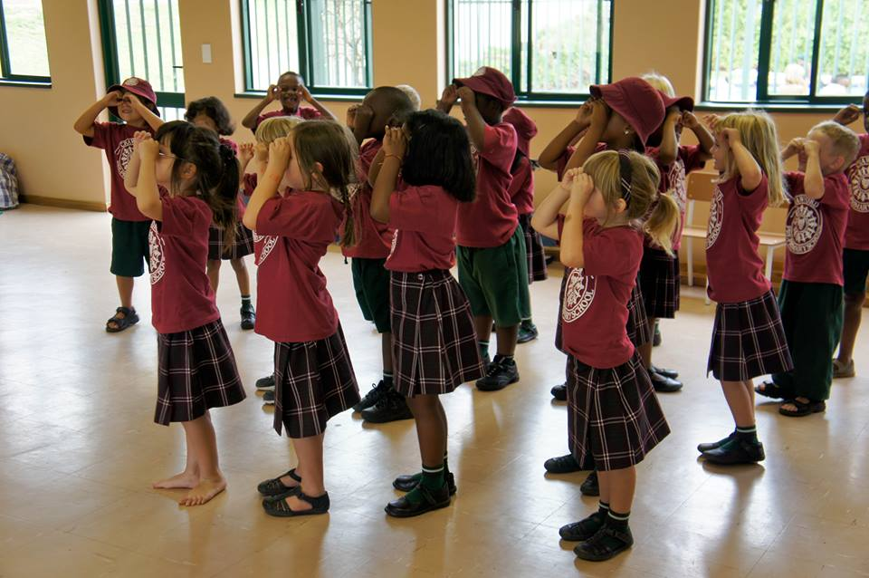
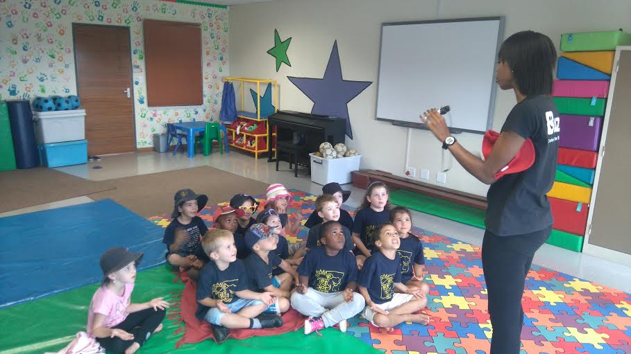
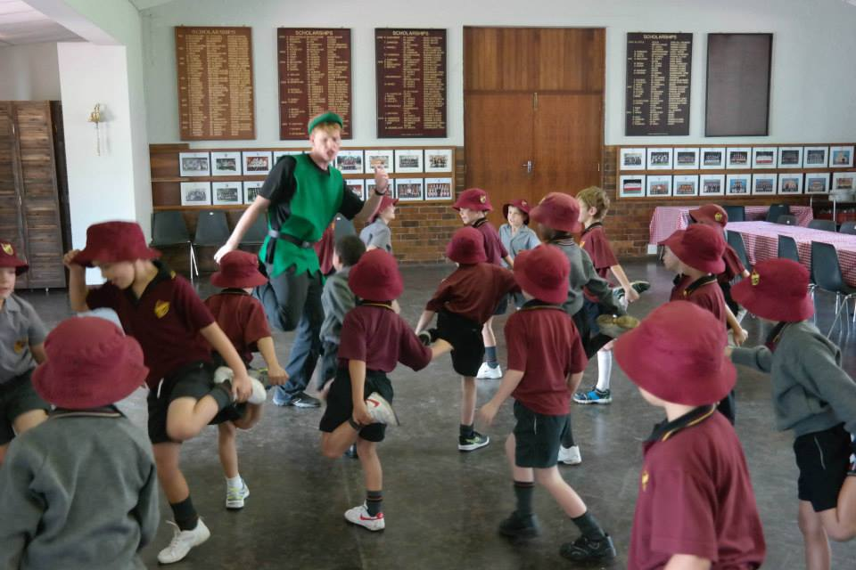
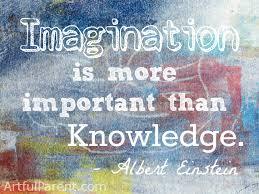
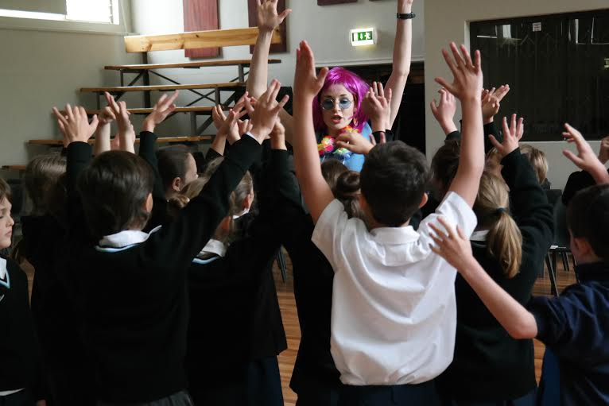

Buzz Blog
It is widely recognized in education today that children should be exposed to and engage with a variety of art forms as a tool for learning and not merely a separate subject. I am a strong believer that visual arts, dance, drama, music and movement should be integrated in the learning experience.



Robinson states that “students with restless minds and bodies — far from being cultivated for their energy and curiosity — are ignored or even stigmatized, with terrible consequences.” Many children struggle to sit still and focus for extended periods of time. Depending on their learning environments, this may be penalized or medicated. Although some may have medical conditions, many children today suffer from nothing more than ‘being a child’ and the energy and enthusiasm that comes with it.
It is our responsibility as educators to not only contain but channel and employ that energy to facilitate learning and give each child a platform for expression. Not only the restless ones, but all children, can benefit from more physicality in the classroom. A quick head-shoulders-knees-and-does behind your desk, a quick run around the field or a physicalized lesson (see ideas below) will cost you a few minutes, which you will save later when children stay more focused throughout learning because they took frequent physical breaks when gear-changes happened in the classroom. It floods their brains with oxygen, gets them present and back into their bodies. The entire body should be involved in the experience of learning.


Instead of urging your class to “be quiet” again and again, eventually resulting in threats, turn the entire idea on its head and make it a game and a fun competition. It works every time.
Choose a ‘control word.’ This can be themed to the topics being taught in the week or month. For instance, when children are learning about animals, you could choose the word: “giraffe.” Every time you say the word “giraffe,” children should stand absolutely still, wherever they are and freeze in the position of a giraffe, using their entire body to create this shape. The trick is to make this a high stakes competition – children will work purely for winning and do not need a prize – so point out the winner who did it quickest or standing most quiet. This should involve “high fives” and genuine pride. You can pitch groups against each other for the mere title of “quickest” or “quietest,” and of course the losing individual or team does not have to be pointed out. The point is that children will want to win and receive your praise, so if you set it up with high stakes and a sense of fun, you will never need to wrestle for your class’ absolute focus and calm again. Discipline does not have to be hard.
The same physicalization can be used throughout learning. Instead of just looking at and drawing pictures of, for instance, different forms of transport, why not become the truck, the train and the airplane? (This will work with any topic.) Use examples of physical shapes, music and your control word to make it a game, high energy and fun. Many children who struggle to focus or sit still for extended periods may very well respond better to this, and other, embodied ways of learning.
Memory and understanding of subject matter may also improve at this young age, as the body will help be a trigger, as a result of physicalizing and activating learning. Click here for more ideas.

Imagination, I believe, is (like) a muscle. It is inherent in us all but just like those muscles that become weak with inactivity so does the imagination. It has been boxed in to fit in the drama class, to be taken out for perhaps creative writing or story time, but imagination is so much more important and should be used throughout learning.
Fast forward to 2045, what age are the kids in your class? What does the world look like? What does the job market look like? How do we prepare our children to inhabit and succeed in this future world? We can’t know exactly which skills our kids will need in the future but I believe that nurturing their curiosity, helping them problem solve creatively and think-outside-the-box is activated and developed by giving them as much opportunity to imagine and improvise. (Blog about this topic here.) This can achieved by playing educational drama based games. Click here for more advice and support.

Why not spice up your lesson with colour, wigs and silly sunglasses to capture their attention and surprise them. Every classroom in a primary school should have a props and costume box where kids can play and make believe in their own break times. Costumes allow more introverted children to behave as a character, and not themselves, allowing them an opportunity to try things they might not usually.
Stimulating imagination may also come from taking an everyday object and imagining alternative interpretations for them. A simple cloth can become the hair of a princess, a trampoline or a dress. Allow the child to use the object while acting out it’s purpose and allow the others to guess. For more ideas click here.

I believe strongly that no child is naturally shy, instead many are terrified of getting “it” wrong. This fear becomes habitual and the inhibited habits are reinforced and hard to break. (Please read more about my thoughts on this here.)
The absolute beauty of Drama based games is that there often “is no wrong,” and the aim is just to try. This is not the case in most academic subjects and because of the severity of it, young children will often become afraid to try, become reluctant to ask questions or offer opinions and under perform in the long run. Not because they are not able to, but because they have become habitually intimidated to fail. Drama games allow for mistakes and because there is so much more freedom, the child gains the confidence, enforced by the playfulness, to try and to contribute. Not only in this activity but throughout their daily learning.
Let us help you with more ideas and short, fun training courses for teachers.